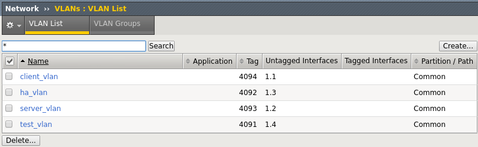
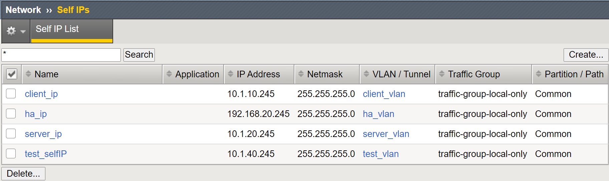

Unofficial - F5 Certification Exam Prep Material > F5 201 - TMOS Administration Labs 08/11/2020 > Lab 1 – Accessing the Lab, Networking and BIG-IP Traffic Flow Source | Edit on
Networking the BIG-IP¶
You should be familiar with networking on the BIG-IP. BIG-IP has a L3 switching architecture built in to the appliances and VEs. For the 201 certification test you should understand how, interfaces, trunks, VLANs (tagged and untagged) and self IPs work together on a BIG-IP.
In this lab you will review the interfaces, create a tagged VLAN and add a self IP to the VLAN to give you a feel for how these object are configured. You will configure the objects using TMUI (BIG-IP GUI interface), but you will also see the TMSH commands.
Review the BIG-IP Interfaces¶
On the sidebar expand the Network tab. Here you will see all the networking selections for the BIG-IP.
Click on Interfaces or click on Interface List on the pop out menu. Here you will see the status and configuration of the interfaces. For statistical information you would click on the Statistics tab on the top bar.
Q1. Why is interface 1.4 showing uninitialized? Does this indicate a problem with the interface?
Create a VLAN¶
VLANs on the BIG-IP can be tagged (802.1q) or untagged. VLANs are required to have an interface assigned to them and a tag, if the Interfaces is Tagged. You will be creating an untagged VLAN.
On the Network sidebar click on VLANs or select VLAN List from the pop out menu. Here you will see a list of the currently configured VLANs and the interfaces assigned to them.
- Create a new VLAN by selecting the Create to the upper right of the list.
- Give the new VLAN a name: test_vlan
- In the Resources section select the Interface: 1.4
- In the Resources section select the Tagging: Untagged
- Add the interface.
- Hit Finished at the bottom.
TMSH
tmsh create net vlan test_vlan tag 40 interfaces add { 1.4 { untagged } }
Once complete you should see the following:
Go to the Interface List. What is the status of the interface now?
Assign a Self IP to a VLAN¶
Self IPs are assign to VLANs to define L3 broadcast domains. By default, self IP addresses will respond only to ICMP traffic (port lockdown set to None). Self IPs are defined as non-floating and floating. Non-floating self IPs fail when the BIG-IP system fails. Floating self IPs will fail over to other BIG-IPs in the device service cluster and send out a gratuitous ARP to change L2 MAC address tables of the switching architecture.
To assign a self IP, go to Network >> Self IPs >> Self IP List from the sidebar and select Create.
- You will name your self IP: test_selfIP
- You will give your self IP the following address: 10.1.40.245
- With a netmask of: 255.255.255.0
- Assign the self IP to the VLAN you just created: test_vlan
- Note the Port Lockdown and Traffic Group settings.
- Select Finished when you are done.
TMSH
tmsh create net self test_selfIP address 10.1.30.245/24 vlan test_vlan
Once complete you should see the following:
Q2. What will happen to the IP addresses if the BIG-IP goes down?
Open an terminal window from the bottom bar on the jumpbox.

From the terminal window ping the self IP you just created.
ping 10.1.40.245
Go to the interface statistics in the GUI and check the statistical information for the interface 1.4.
From the terminal window SSH to the BIG-IP.
ssh root@10.1.1.4 password: f5UDFrocks!
On the BIG-IP go into TMSH and run the following commands and note the difference between the list and show commands. You may see output like this on the exam.
list net interface show net interface list net vlan show net vlan list net self show net self